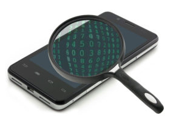

ВОССТАНОВЛЕНИЕ ДАННЫХ С ПЛАНШЕТОВ

Кроме основного нашего направления по восстановлению информации с компьютерных носителей информации, мы также восстанавливаем данные с мобильных телефонов и смартфонов. Как и с традиционными носителями информации не стоит забывать о том, что при обращении в сервисный центр, которые занимается ремонтом, Вы получите отремонтированное устройство, которое уже не содержит Ваших важных данных. Поэтому, если Вам нужна именно информация с телефона — приходите и мы Вам поможем.
В любом современном и не очень смартфоне используется флеш память. Примерно такая же, как и в самой обыкновенной флешке, к примеру используемой в фотоаппарате. Конечно, есть отличия, связанные с алгоритмом работы, организации данных и многих других аспектов. Но по сути своей, они идентичны.
Почему информация в телефоне может быть утеряна или просто недоступна? Вот несколько основных причин:
Телефон перестал загружаться. Чаще всего в этой ситуации повреждаются какие-либо служебные данные, отвечающие за работу устройства (например загрузчик). Методика восстановления данных сильно зависит от конкретной модели и ситуации. В каких-то случаях, восстановление данных возможно путём «починки» файловой структуры и системных файлов. В более сложных ситуациях, необходимо выпаивать микросхему памяти и считывать её на специализированном оборудовании.
Телефон не включается. Причин тому может множество. И если восстановление аппарата не сопряжено с большими трудностями, проще его починить и включить, дабы скопировать данные в штатном режиме. Если же, починка телефона не возможна или слишком сложна, необходимо также выпаивать микросхему памяти.
Удалили \ сделали полный сброс. Самая тяжёлая ситуация. Ввиду специфики организации хранения данных во флеш памяти, во время удаления или не дай бог, полного сброса, происходит массовая «перезапись» ячеек. И если данные в ячейке отсутствуют, то есть если она была «1», а стала «0», то информация уже не существует в природе. Исход восстановления данных напрямую зависит от того, как давно произошёл инцидент, использовалось ли устройство и модели телефона.
Каждый случай индивидуален и точно сказать, возможно ли восстановление данных, без проведения диагностики невозможно. Мы проводим её бесплатно, обычно в течении суток.
Стоимость
#
Проблема
Стоимость, руб.
1
Диагностика:
Бесплатно
2
Доставка накопителя по городу Набережные Челны:
Бесплатно
3
Копирование информации на носитель заказчика:
Бесплатно
4
Хранение резервной копии данных в течении 3-х дней:
Бесплатно
5
Логические неисправности (удалили, отформатировали, перестал определяться, файловая система RAW и т.п.):
от 7000 руб
6
Устройство не загружается (не требуется выпаивание микросхемы памяти):
от 9000 руб
7
Устройство не загружается (требуется выпаивание микросхемы памяти):
от 16000 руб